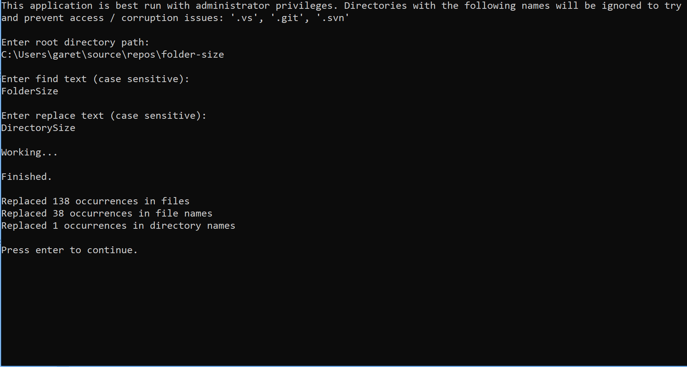
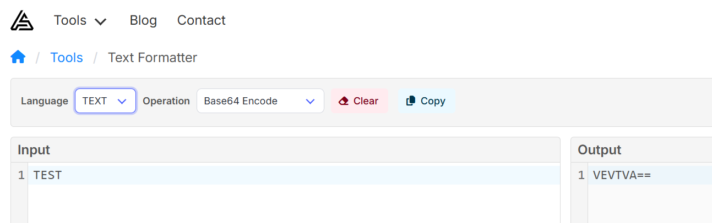
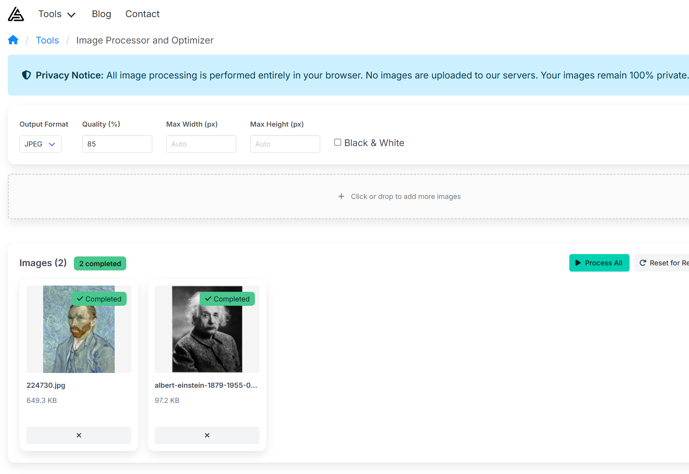
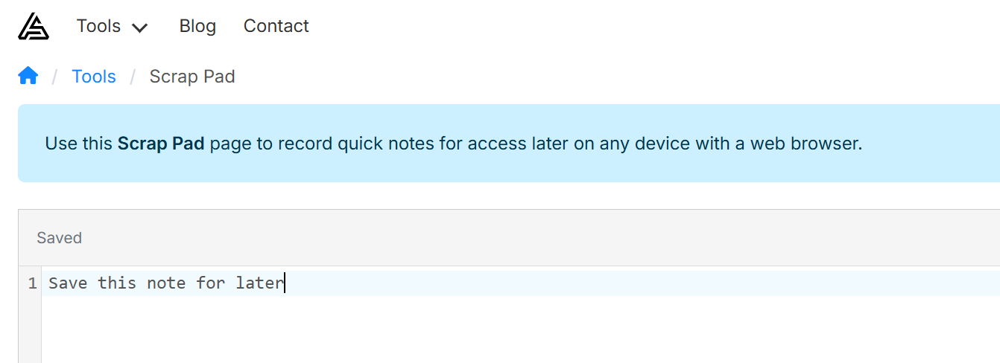

Open Source Tools and Web Utilities from App Software Ltd
As developers, we often encounter repetitive tasks that can eat up valuable development time. App Software Ltd has released two powerful open-source .NET tools and three privacy-focused web-based utilities that address common pain points in modern development workflows. Let's explore what makes these tools valuable for the development community.
Open Source .NET Tools
App Software Ltd maintains two essential open-source tools for .NET developers: dotnet-licence-key-generator and dotnet-project-rename.
.NET Licence Key Generator
Repository: github.com/appsoftwareltd/dotnet-licence-key-generator
What It Does
The .NET Licence Key Generator provides a robust, lightweight solution for generating and verifying software licence keys. It implements a Partial Key Verification System (PKV), which offers a defence against key generators (keygens) that might be built to crack your licence key system.
The tool is based on Brandon Staggs' article on implementing a partial serial number verification system in Delphi, ported to C# with enhancements.
Key Features
- No "Phone Home" Required: Licence keys can be verified offline without needing to contact a remote server
- Revocation Capability: Ability to blacklist licence keys that have been distributed without authorization
- Security Through Partial Verification: The full key generation data is not required for verification, making it harder to reverse-engineer a keygen
- High Performance: Tested up to 1,000,000 key generation and verification cycles in just 10.2 seconds
- Cross-Platform: Targets .NET Standard 1.0, compatible with .NET Core 1.0+, .NET Framework 4.5+, and modern .NET
How It Works
The system generates licence keys using:
- A seed value: Unique to each context (e.g., user ID or application instance)
- Key byte sets: Arbitrary bytes unique to your application
During verification, only a subset of the key bytes used to generate the full key are tested. This means the complete key generation algorithm doesn't need to be compiled into your distributed application, making it significantly more difficult for attackers to reverse-engineer.
Example Usage
Key Generation (server-side only):
var keyByteSets = new[]
{
new KeyByteSet(keyByteNumber: 1, keyByteA: 58, keyByteB: 6, keyByteC: 97),
new KeyByteSet(keyByteNumber: 2, keyByteA: 96, keyByteB: 254, keyByteC: 23),
// ... more key bytes
};
var pkvKeyGenerator = new PkvKeyGenerator();
int seed = new Random().Next(0, int.MaxValue);
string licenceKey = pkvKeyGenerator.MakeKey(seed, keyByteSets);
Key Verification (client application):
// Only include a subset of the key bytes used in generation
var keyByteSets = new[]
{
new KeyByteSet(keyByteNumber: 1, keyByteA: 58, keyByteB: 6, keyByteC: 97),
new KeyByteSet(keyByteNumber: 5, keyByteA: 62, keyByteB: 4, keyByteC: 234),
new KeyByteSet(keyByteNumber: 8, keyByteA: 6, keyByteB: 88, keyByteC: 32)
};
var pkvKeyVerifier = new PkvKeyVerifier();
var result = pkvKeyVerifier.VerifyKey(
key: licenceKey,
keyByteSetsToVerify: keyByteSets,
totalKeyByteSets: 8,
blackListedSeeds: null
);
GitHub Metrics
While specific star and fork counts fluctuate, this repository has gained recognition in the .NET community as a go-to solution for implementing licence key systems. The project is actively maintained and includes comprehensive documentation, unit tests, and sample applications demonstrating both key generation and verification.
Installation
Available as NuGet packages:
- AppSoftware.LicenceEngine.KeyGenerator - For your key generation server
- AppSoftware.LicenceEngine.KeyVerification - For your distributed application
dotnet add package AppSoftware.LicenceEngine.KeyGenerator
dotnet add package AppSoftware.LicenceEngine.KeyVerification
.NET Project Rename
Repository: github.com/appsoftwareltd/dotnet-project-rename
What It Does
.NET Project Rename is a powerful command-line tool that performs deep, recursive find-and-replace operations across:
- File contents
- File names
- Directory names
This is invaluable when you're reusing an existing project as a template for a new project and need to rename namespaces, project names, and references throughout the entire codebase.

The Problem It Solves
Imagine you have a project called Foo.Bar used throughout namespaces, project names, file names, and folder names. You want to transform it into My.New.Project. Manually renaming everything would be tedious and error-prone. This tool automates the entire process.
Key Features
- Recursive Processing: Operates on all files and directories within the specified path
- Case-Sensitive Replacement: Precise control over what gets replaced
- Smart File Handling: Automatically avoids corrupting version control and IDE directories (
.git,.svn,.vs) - Case-Only Rename Support: Handles case-only changes correctly (e.g.,
footoFoo) - Interactive or Scripted: Run with command-line arguments or in interactive mode
- Remote Execution: Can be run directly from GitHub without downloading
How It Works
Built using dotnet-script, this tool runs as a .csx file, making it lightweight and easy to execute without compilation.
Usage Examples
Interactive Mode:
dotnet script https://raw.githubusercontent.com/appsoftwareltd/dotnet-project-rename/master/src/dotnet-script/app.csx
The tool will prompt you for:
- Root directory path
- Find text (case sensitive)
- Replace text (case sensitive)
Command-Line Mode:
dotnet script https://raw.githubusercontent.com/appsoftwareltd/dotnet-project-rename/master/src/dotnet-script/app.csx -- -d "<Start Directory>" -f "<Find Text>" -r "<Replace Text>"
Command-Line Options
-d: Directory path-f: Find text-r: Replace text--help: Display help text
Example Output
After execution, you'll see a summary like:
Finished.
Replaced 156 occurrences in files
Replaced 23 occurrences in file names
Replaced 8 occurrences in directory names
Prerequisites
- .NET Core 2.2 runtime or higher
- dotnet-script tool (install via
dotnet tool install -g dotnet-script)
GitHub Metrics
This utility has proven popular among developers who regularly work with project templates or need to fork and rebrand existing codebases. Its simplicity and effectiveness have made it a go-to tool for project renaming tasks.
Free Web-Based Developer Tools
In addition to our open-source .NET tools, App Software Ltd provides three powerful, privacy-focused web-based utilities that run entirely in your browser. These tools require no installation, no registration, and process all data client-side to ensure your privacy.
Text Formatter
URL: appsoftware.com/tools/utilities/text-formatter

What It Does
Text Formatter is a versatile tool for formatting, validating, and transforming text data. It provides comprehensive support for JSON, XML, HTML, and plain text operations including beautification, minification, validation, and Base64 encoding/decoding.
Key Features
- Multi-Format Support: JSON, XML, HTML, and plain text processing
- JSON Operations:
- Format/beautify JSON with configurable indentation
- Minify JSON to reduce file size
- Validate JSON syntax with detailed error reporting
- Sort JSON keys alphabetically
- XML Processing:
- Format/beautify XML with proper indentation
- Validate XML structure
- HTML Beautification: Format messy HTML code
- Text Utilities:
- Base64 encoding and decoding
- Remove line breaks from multi-line text
- Real-Time Processing: Instant feedback as you work
- Copy to Clipboard: One-click copying of formatted results
Use Cases
- API Development: Format and validate JSON responses during API testing
- Data Transformation: Convert between different text encodings
- Code Review: Beautify minified JSON/XML for readability
- Configuration Management: Validate and format configuration files
- Web Development: Clean up HTML markup
Image Processor and Optimizer
URL: appsoftware.com/tools/utilities/image-processor

What It Does
The Image Processor and Optimizer is a free, 100% privacy-focused online tool that processes images entirely in your web browser. Unlike traditional image optimisation services that require uploading your files to remote servers, this tool performs all operations client-side using JavaScript and browser APIs, ensuring your images never leave your device.
Key Features
- Format Conversion: Convert between JPEG, PNG, WebP, BMP, TIFF, and GIF formats
- SVG to Raster Conversion: Convert vector SVG files (logos, icons, illustrations) to raster formats
- Image Optimization: Adjust quality settings (1-100%) for JPEG and WebP to balance file size and visual quality
- Intelligent Resizing: Resize images with automatic aspect ratio preservation using max width/height controls
- Black & White Conversion: Transform color images to grayscale instantly
- Bulk Processing: Upload and process multiple images simultaneously with consistent settings
- Progress Tracking: Monitor real-time progress with visual indicators for each image
- Smart Naming: Processed images include parameter suffixes (e.g.,
_optimized_resized_q85_w800_h600.jpg) - Complete Privacy: All processing happens in your browser - your images never touch our servers
Supported Formats
- Input: JPEG/JPG, PNG, WebP, BMP, TIFF, GIF, SVG
- Output: JPEG/JPG, PNG, WebP, BMP, TIFF, GIF
WebP Support: Native WebP encoding and decoding through browser APIs, offering superior compression compared to JPEG or PNG. Supported in all modern browsers including Chrome, Firefox, Edge, Safari 14+, and Opera.
Common Use Cases
- Web Optimization: Convert images to WebP format for faster page loads
- SVG to Raster: Convert vector logos and icons to PNG or JPEG for email signatures, social media, or legacy systems
- Social Media: Resize images to meet platform-specific dimension requirements
- Photography: Quick format conversion and resizing for online portfolios or galleries
- E-commerce: Batch process product images to consistent dimensions and formats
- Document Processing: Convert colour scans to grayscale to reduce file sizes
- Storage Optimization: Compress images to save cloud storage space without visible quality loss
Privacy & Security
Your privacy is paramount. This image processor operates entirely within your web browser using client-side JavaScript. No images are uploaded to our servers or any third-party service. This means:
- Complete privacy - your images remain on your device
- No data retention - we never see your images
- No usage tracking - we cannot track what you process
- Offline capability - works without internet after initial page load
- No file size limits - process images of any size your browser can handle
Technical Details
The tool uses a hybrid processing approach for optimal compatibility and performance:
- Canvas API: Handles WebP input/output using native browser capabilities
- Jimp Library: Processes PNG, JPEG, BMP, TIFF, and GIF formats
- Client-Side Only: All code runs in your browser with no server dependencies
Scrap Pad
URL: appsoftware.com/tools/utilities/scrap-pad

What It Does
Scrap Pad is a simple online note-taking tool that allows you to jot down and save quick notes accessible from any device with a web browser. It's perfect for capturing ideas, snippets, reminders, and temporary information you need to access across devices.
Key Features
- Multi-Device Access: Access your notes from any device with a web browser
- Persistent Storage: Notes are saved to your account and persist across sessions
- Clean Interface: Distraction-free writing environment
- Instant Sync: Notes are synchronised in real-time when you save
- Simple and Fast: No complex features - just a straightforward notepad
Use Cases
- Quick Notes: Jot down ideas, reminders, or temporary information
- Code Snippets: Store small code fragments for later reference
- Cross-Device Clipboard: Share text between your devices
- Meeting Notes: Capture quick notes during meetings
- Draft Messages: Compose messages or emails before sending
Why These Tools Matter
These open-source tools and web-based utilities solve real-world problems that developers face regularly:
-
dotnet-licence-key-generator addresses the common need for software licensing without requiring complex infrastructure or "phone home" functionality.
-
dotnet-project-rename eliminates hours of tedious manual find-and-replace work when bootstrapping new projects from existing codebases.
-
Text Formatter provides instant formatting and validation for common data formats without leaving your browser or installing plugins.
-
Image Processor offers professional-grade image optimisation with complete privacy - no uploads, no tracking, no data retention.
-
Scrap Pad simplifies cross-device note-taking without the complexity of full-featured note applications.
Open Source Commitment
These tools are released under permissive open-source licenses:
- dotnet-licence-key-generator: Creative Commons Attribution 2.0 UK License
- dotnet-project-rename: MIT License
App Software Ltd welcomes contributions and sponsorship from commercial users to support continued development and maintenance of these tools.
Get Started
Open Source Tools
Visit the GitHub repositories to explore the source code, view comprehensive documentation, and contribute to these projects:
Web-Based Tools
Try these free, privacy-focused tools directly in your browser:
- Text Formatter - Format and validate JSON, XML, HTML, and text
- Image Processor - Optimize and convert images with complete privacy
- Scrap Pad - Quick note-taking across all your devices
Whether you're building commercial software that needs licensing, frequently creating new projects from templates, formatting data, processing images, or capturing quick notes, these tools can save you significant time and effort while maintaining professional quality standards.
*App Software Ltd specialises in .NET development, software architecture, and cloud solutions. For bespoke software development and consulting, visit appsoftware.com send a message here.